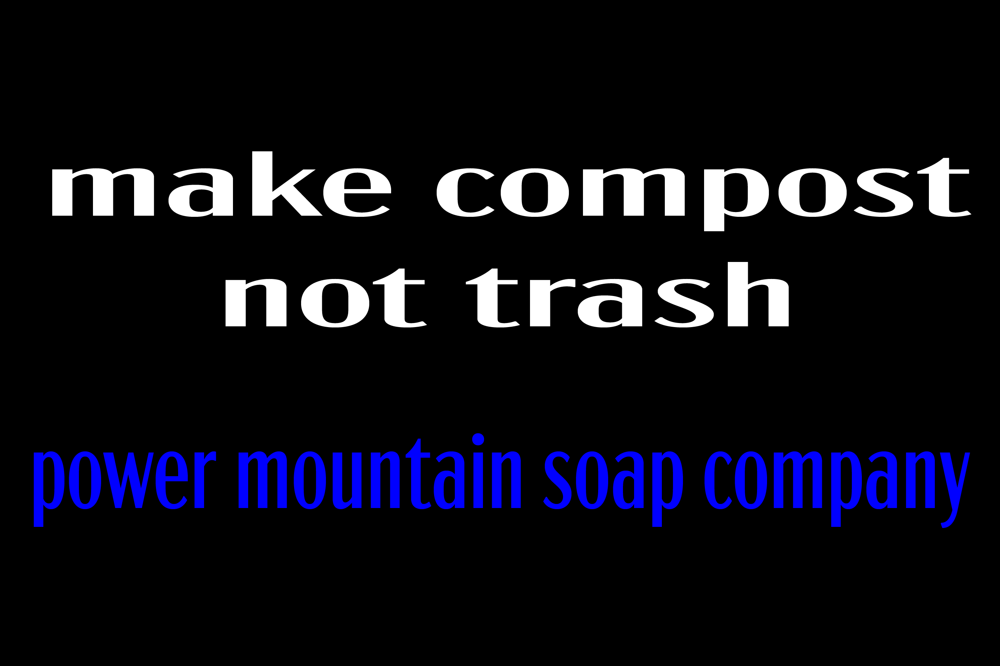

sustainable advertising
mountain sky is a toronto based soap brand that is fully commited to sustainability ,
selling river friendly soaps in biodegradable packaging .
they approached us asking for one thing : sustainable advertising . the rest was up to us .
our solution
the key to our solution was derived from mountain sky's approach .
the fact that their soaps are "river friendly" holds a valuable insight : that most soaps are not .
we began to think about other objects that could be sustainabile but generally are not . that is how we came on this idea :
sustainable advertising advertising sustainability .
the few ads we rolled out each shared the same goal : to make people think about how few products are good for the environment . hopefuly it would make people reconsider their habits ( and maybe even buy mountain sky soap ) . it also brings to light how commited mountain sky is to the environment .
while mountain sky is a real brand (buy their soap!) this project is a hypothetical sollution . blame Anthony Kerr for assigning us this hypotheical challenge .